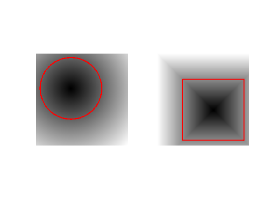
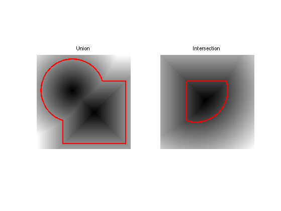
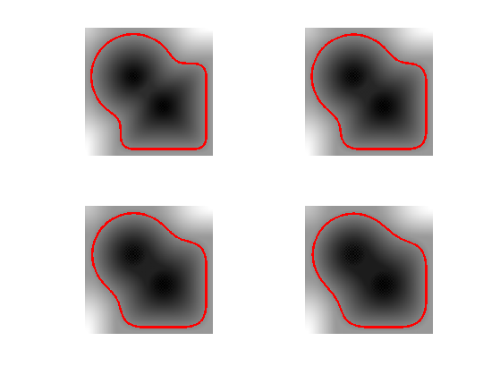
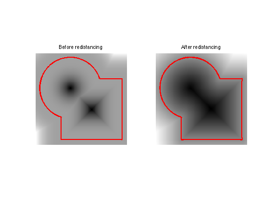
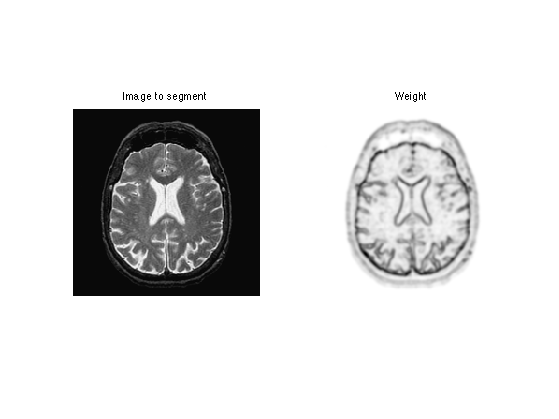
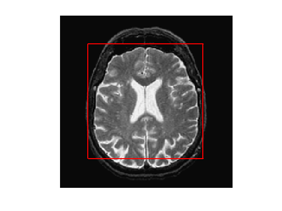
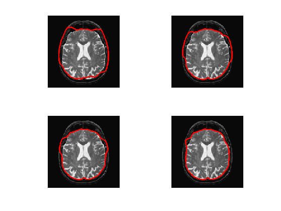
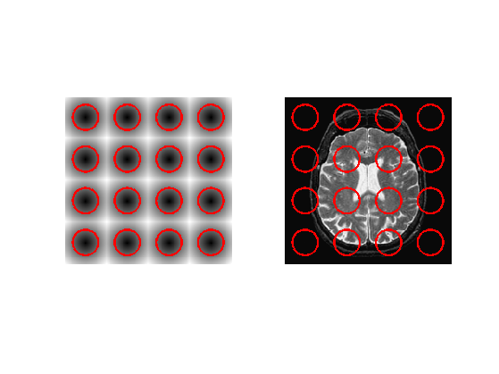
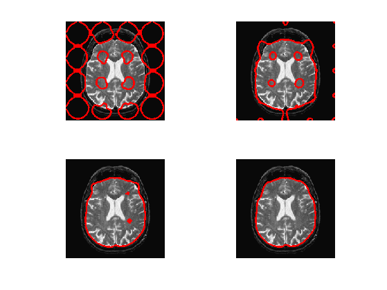

Active Contours using Level Sets
This tour explores image segementation using level set methods.
Contents
Installing toolboxes and setting up the path.
You need to download the following files: signal toolbox, general toolbox and graph toolbox.
You need to unzip these toolboxes in your working directory, so that you have toolbox_signal, toolbox_general and toolbox_graph in your directory.
For Scilab user: you must replace the Matlab comment '%' by its Scilab counterpart '//'.
Recommandation: You should create a text file named for instance numericaltour.sce (in Scilab) or numericaltour.m (in Matlab) to write all the Scilab/Matlab command you want to execute. Then, simply run exec('numericaltour.sce'); (in Scilab) or numericaltour; (in Matlab) to run the commands.
Execute this line only if you are using Matlab.
getd = @(p)path(p,path); % scilab users must *not* execute this
Then you can add the toolboxes to the path.
getd('toolbox_signal/'); getd('toolbox_general/'); getd('toolbox_graph/');
Managing level set functions
In the level set formalism, the evolution of some curve \( (\ga(t))_{t=0}^1 \) is computed by evolving the zero level of a function \(\phi : \RR^2 \rightarrow \RR \) \[ \enscond{\ga(s)}{ s \in [0,1] } = \enscond{x \in \RR^2}{\phi(x)=0}. \] This corresponds to replacing the parameteric representation \(\ga\) of the curve by an implicit representation. This requires an additional dimension (and hence more storage) but ease the handling of topological change of the curve during the evolution.
Discretazion size \(n \times n\) of the domain \([0,1]^2\).
n = 200; [Y,X] = meshgrid(1:n,1:n);
One can create a circular shape by using the signed distance function to a circle \[ \phi_1(x) = \sqrt{ (x_1-c_1)^2 + (x_2-c_2)^2 } - r \] where \(r>0\) is the radius and \(c \in \RR^2\) the center.
Radius \(r\).
r = n/3;
Center \(c\).
c = [r r] + 10;
Distance function \(\phi_1\).
phi1 = sqrt( (X-c(1)).^2 + (Y-c(2)).^2 ) - r;
Exercice 1: (check the solution) Load a square shape \(\phi_2\) at a different position for the center.
exo1;
Display the curves associated to \(\phi_1\) and \(\phi_2\).
clf; subplot(1,2,1); plot_levelset(phi1); subplot(1,2,2); plot_levelset(phi2);
Exercice 2: (check the solution) Compute the intersection and the union of the two shapes. Store the union in \(\phi_0\) (variable phi0), that we will use in the remaining part of the tour.
exo2;
Mean Curvature Motion.
The mean curvature motion corresponds to the minimizing flow of the length of the curve \[ \int_0^1 \norm{\ga'(s)} d s. \]
It is implemeted in a level set formalism by a familly \(\phi_t\) of level set function parameterized by an artificial time \(t \geq 0\), that satisfies the following PDE \[ \pd{\phi_t}{t} = -G(\phi_t) \qwhereq G(\phi) = -\norm{\nabla \phi} \text{div} \pa{ \frac{\nabla \phi}{\norm{\nabla \phi}} } \] and where \(\nabla \phi_t(x) \in \RR^2\) is the spacial gradient.
This flow is computed using a gradient descent \(\phi^{(0)} = \phi_0\) and This is implemented using a gradient descent scheme. \[ \phi^{(\ell+1)} = \phi^{(\ell)} - \tau G(\phi^{(\ell)}), \] where \(\tau>0\) is small enough time step.
Maximum time of the evolution \(0 \leq t \leq t_{\max}\).
Tmax = 200;
Time step \(\tau>0\) (should be small).
tau = .5;
Number of iterations.
niter = round(Tmax/tau);
We use centered differences for the discretization of the gradient.
options.order = 2;
Initial shape \(\phi^{(0)}\) at \(t=0\).
phi = phi0;
We now compute the right hand side of the evolution equation.
Compute the gradient \(\nabla \phi\).
g0 = grad(phi,options);
Norm \(\norm{\nabla \phi}\) of the gradient.
d = max(eps, sqrt(sum(g0.^2,3)) );
Normalized gradient.
g = g0 ./ repmat( d, [1 1 2] );
The curvature term.
K = -d .* div( g,options );
Perform one step of the gradient descent.
phi = phi - tau*K;
Exercice 3: (check the solution) Implement the mean curvature motion.
exo3;
Levelset Re-distancing
During PDE resolution, a level set function \(\phi\) might become ill-conditionned, so that the zero crossing is not sharp enough. The quality of the level set function is restored by computing the signed distance function to the zero level set.
This corresponds to first extracting the zero level set \[ \Cc = \enscond{x \in \RR^2 }{\phi(x)=0}, \] and then solving the following eikonal equation PDE on \(\tilde \phi\) (in viscosity sense) \[ \norm{\nabla \tilde \phi(x)} = 1 \qandq \forall y \in \Cc, \tilde\phi(y)=0. \] The one can replace \(\phi\) by \(\text{sign}(\phi(x))\tilde \phi(x)\) which is the signed distance function to \(\Cc\).
We set \(\phi=\phi_0^3\) so that they are both valid level set function of the same curve, but \(\phi\) is not the signed distance function..
phi = phi0.^3;
Solve the eikonal PDE using the Fast Marching algorithm.
phi1 = perform_redistancing(phi0);
Display the level sets.
clf; subplot(1,2,1); plot_levelset(phi); title('Before redistancing'); subplot(1,2,2); plot_levelset(phi1); title('After redistancing');
Edge-based Segmentation with Geodesic Active Contour
Geodesic active contours compute loval minimum of a weighted geodesic distance that attract the curve toward the features of the background image.
Note: these active contours should not be confounded with the geodesic shortest paths, that are globally minimizing geodesics between two points. Here the active contour is a close curve progressively decreasing a weighted geodesic length that is only a local minimum (the global minimum would be a single point).
Size of the image.
n = 200;
First we load an image \(f_0 \in \RR^{n \times n}\) to segment.
name = 'cortex';
f0 = rescale( sum( load_image(name, n), 3) );
Given a background image \(f_0\) to segment, one needs to compute an edge-stopping function \(W\). It should be small in area of high gradient, and high in area of large gradient.
We use here \[ W(x) = \al + \frac{\be}{\epsilon + d(x) } \qwhereq d = \norm{\nabla f_0} \star h_a, \] and where \(h_a\) is a blurring kernel of size \(a>0\).
Compute the magnitude of the gradient \(d_0(x) = \norm{\nabla f_0(x)}\).
g = grad(f0,options); d0 = sqrt(sum(g.^2,3));
Blur size \(a\).
a = 5;
Compute the blurring \(d = d_0 \star h_a\).
d = perform_blurring( d0,a );
Parameter \(\epsilon>0\).
epsilon = 1e-1;
We set the \(\al\) and \(\be\) parameters to adjust the overall values of \(W\) (equivalently we use the function rescale).
W = 1./(epsilon+d); W = rescale(-d,.1,1);
Display it.
clf; imageplot(f0,'Image to segment',1,2,1); imageplot(W,'Weight',1,2,2);
Exercice 4: (check the solution) Compute an initial shape \(\phi_0\) at time \(t=0\), for instance a centered square.
exo4;
Display it.
clf; plot_levelset(phi0,0,f0);
The geodesic active contour minimizes a weighted length of curve \[ \umin{\ga} \int_0^1 \norm{\ga'(s)} W(\ga(s)) d s \]
The level set implementation of the gradient descent of this energy reads \[ \pd{\phi_t}{t} = G(\phi_t) \qwhereq G(\phi) = -\norm{\nabla \phi} \text{div}\pa{ W \frac{\nabla \phi}{\norm{\nabla \phi}} } \]
This is implemented using a gradient descent scheme. \[ \phi^{(\ell+1)} = \phi^{(\ell)} - \tau G(\phi^{(\ell)}), \] where \(\tau>0\) is small enough.
Gradient step size \(\tau>0\).
tau = .4;
Final time and number of iteration of the algorithm.
Tmax = 1500; niter = round(Tmax/tau);
Initial distance function \(\phi^{(0)}=\phi_0\).
phi = phi0;
Note that we can re-write the gradient of the energy as \[ G(\phi) = -W \norm{\nabla \phi} \text{div} \pa{ \frac{\nabla \phi}{\norm{\nabla \phi}} } - \dotp{\nabla W}{\nabla \phi} \]
Pre-compute once for all \(\nabla W\).
gW = grad(W,options);
Exercice 5: (check the solution) Compute and store in G the gradient \(G(\phi)\) (right hand side of the PDE) using the current value of the distance function \(\phi\).
exo5;
Do the descent step.
phi = phi - tau*G;
Once in a while (e.g. every 30 iterations), perform re-distancing of \(\phi\).
phi = perform_redistancing(phi);
Exercice 6: (check the solution) Implement the geodesic active contours gradient descent. Do not forget to do the re-distancing.
exo6;
Region-based Segmentation with Chan-Vese
Chan-Vese active contours corresponds to a region-based energy that looks for a piecewise constant approximation of the image.
The energy to be minimized is \[ \umin{\phi} L(\phi) + \la \int_{\phi(x)>0} \abs{f_0(x)-c_1}^2 d x + \la \int_{\phi(x)<0} \abs{f_0(x)-c_2}^2 d x \] where \(L\) is the length of the zero level set of \(\phi\). Note that here \((c_1,c_2) \in \RR^2\) are assumed to be known.
Exercice 7: (check the solution) Compute an initial level set function \(\phi_0\), stored in phi0, for instance many small circles.
exo7;
Parameter \(\la\)
lambda = 0.8;
Values for \(c_1,c_2\)
c1 = 0.7; c2 = 0;
Step size.
tau = .4;
Number of iterations.
Tmax = 100; niter = round(Tmax/tau);
Initial distance function \(\phi_0\) at time \(t=0\).
phi = phi0;
The minimizing flow for the CV energy reads \[ \pd{\phi_t}{t} = - G(\phi_t) \] where \[ G(\phi) = - W \norm{\nabla \phi} \text{div}\pa{ \frac{\nabla \phi}{\norm{\nabla \phi}} } + \la (f_0-c_1)^2 - \la (f_0-c_2)^2. \]
Exercice 8: (check the solution) Compute this gradient \(G(\phi)\) using the current value of the distance function
exo8;
Do a descent step.
phi = phi + tau*G;
Exercice 9: (check the solution) Implement the full gradient descent.
exo9;
Exercice 10: (check the solution) In the case that one does not know precisely the constants \(c_1\) and \(c_2\), how to update them automatically during the evolution ? Implement this method.
exo10;